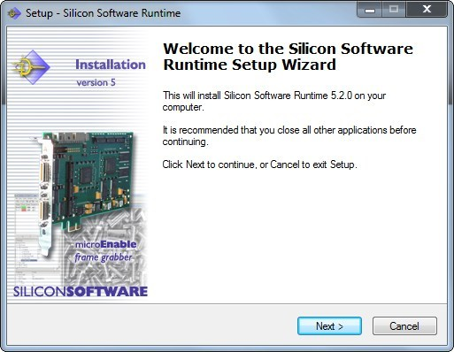
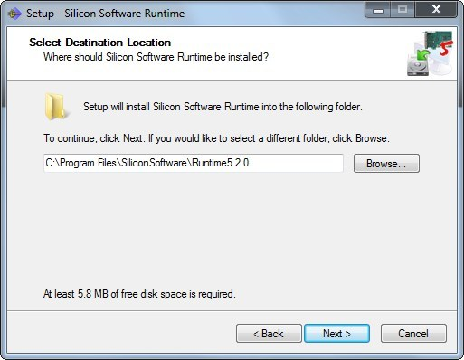
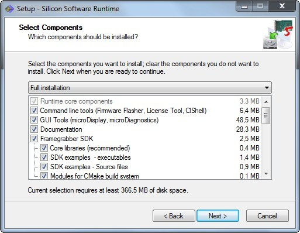
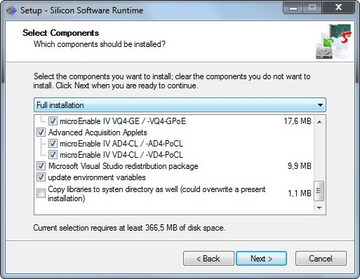
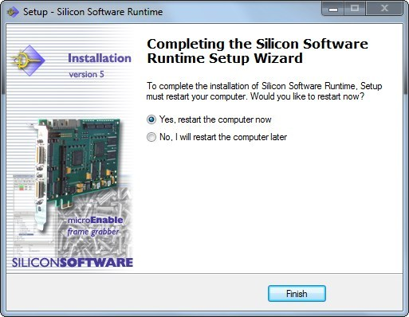

Quick Installation Guide - Getting Started
microEnable Frame Grabber Series and
Runtime Software Version 5
Windows® XP (32bit/64bit), Windows® Vista (32bit/64bit), Windows® 7 (32bit/64bit), Windows® 8 (32bit/64bit)
1 System Requirements
PCIe requirements:
microEnable IV-AS1-PoCL
microEnable IV-AD1-CL / -PoCL / -mPoCL
microEnable IV-VD1-CL
- PCIe (PCI Express) x1 or
- PCIe x4 or
- PCIe x8 or
- PCIe x16
microEnable IV-AD4-CL / -PoCL
microEnable IV-VD4-CL / -PoCL
microEnable IV-AQ4-GE / -GPoE
microEnable IV-VQ4-GE / -GPoE
microEnable IV-AD4-LVDS
- PCIe (PCI Express) x4 or
- PCIe x8 or
- PCIe x16
microEnable 5 AQ8-CXP6B
microEnable 5 VQ8-CXP6B
- PCIe (PCI Express) x8 (Gen2) or
- PCIe x16 (Gen2)
Runtime installation 5 includes:
- Advanced AcquisitionApplets
- AcquisitionApplets
- microDisplay
- microDiagnostics
- FirmwareFlasher (command line version)
- GenIcam Explorer
- Software Development Kit (SDK) 5
- Silicon Software GigE network service: SiSo Generic Service
- CLShell
- Driver
- Microsoft Visual Studio 2005 Redistributional Package (only Win)
- Microsoft Visual Studio 2008 SP1 Redistributional Package (only Win)
- Documentation
- SDK Examples

2 Installation under Windows XP / Vista / 7 / 8
| IMPORTANT NOTE: Before running microDiagnostics, microDisplay, any other tool, or even an SDK project, please check if for the specific Runtime Software version the frame grabber is loaded with the required firmware, and if the required device driver is installed! |
2.1 Requirements for Installation
- Windows® XP Service Pack 3 32bit/64bit
- Windows® Vista 32bit/64bit
- Windows® 7 32bit/64bit
Windows® 8 32bit/64bit
2.2 Hardware Installation
- Shut down your computer
- Plug the microEnable frame grabber into a free, appropriate slot of your PC
- Important note regarding microEnable 5:
Frame grabber operation requires necessarily a plugged connection of the 4pin Molex PC power supply connector to the frame grabber
| Note: Before installing hardware, ensure the system power is OFF and unplugged from the power outlet, and that proper electrical grounding procedures have been followed. |
2.3 Software Installation
- Boot the system
- Run the installer or insert the installation DVD:
Setup will be started automatically,
otherwise start the setup within the windows folder of the installation CD/DVD. - Install the software and follow the installation dialogs.
Step 1: The installation starts to collect information for the procedure. Press "Next".

Step 2: Select the destination folder. Confirm the default setting with "Next" or edit the path manually or use the browser functionality with the "Browse" button to select the destination folder interactively.
|

Step 3: Select the installation components by predefined installation profiles and confirm with "Next", or select certain components for installation.
Note: For frame grabber products mE4 AD4-CL&AD4-PoCL and mE4 VD4-CL&VD4-PoCL, there is a new, improved set of Advanced AcquisitionApplets available. We recommend to use the new, improved Advanced AcquisitionApplets instead of the "classical" AcquisitionApplets set (which nevertheless can also be installed and used).


Final Steps: Finally, after going through some further dialog windows, you are asked to restart the
system.


2.4 Hardware Diagnostics
| IMPORTANT NOTE: Before running microDiagnostics, microDisplay, any other tool or even an SDK project, make sure that for the specific Runtime Software version you are using, the required firmware is loaded onto the frame grabber, and the required device driver is installed! |
Run the tool microDiagnostics to perform a full hardware test on one of your microEnable IV boards.
If a certain frame grabber board is not listed, proceed the following steps to verify that the board has been properly detected by the host system and that the driver is installed correctly:
- Open "Start | Settings | System Control"
- Double click onto "System"
- Click onto "Hardware" tab
- Open "Device Manager"
- Search for the "Silicon Software" subentry and right click onto it to open the "Properties"
- Click onto the "Driver" tab
- Click onto "Actualize Driver"
- Follow the actualization dialogs
- It is necessary to reboot your system
Please also take a look at the microDiagnostics tool documentation .

2.5 Camera Configuration - Camera Link, LVDS, and GigE Vision
- Connect frame grabber and camera
- Plug power supply into camera (devices without Pover Over support like PoCL or GPoE)
- Install the camera configuration tool from the corresponding manufacturer.
- Configure the camera with camera configuration tool from its manufacturer: more specific information can be found here (section Image Acquisition).
- For configuring CoaXPress and GigE Vision cameras, please use the Silicon Software GenICam Explorer which is also part of the Windows Runtime installation.

2.6 Quick Image Acquisition Check - microDisplay
| IMPORTANT NOTE: Silicon Software frame grabbers do not need a specific camera configuration file! |
- Run microDisplay
- Select an appropriate applet and select a port where the camera has been connected to (green marked port within board and port window)
- A: Camera Link/LVDS setup: Configure the frame grabber in the parameter setting window of microDisplay: Camera Link sub parameter, e.g., "10 Bit DualTap", and image width and height.
- B: GigE Vision setup: The frame grabber is automatically configured with the correct settings for image width and height and optionally the Bayer Filter Mask is automatically set.
- Configure optionally specific operation modes of the frame grabber (e.g. trigger settings)
- Start image grabbing
For further information, please refer to the microDisplay documentation.

2.7 Frame Grabber SDK Hints
- Includes can be found within the subdirectory "include" within the installation directory.
- Library files can be found within the subdirectory "lib" within the installation directory. At this place, a compiler-dependend subdirectory contains all required SDK libraries.

3 Installation under Linux
IMPORTANT NOTE: Before running microDiagnostics, microDisplay, any other tool, or even an SDK project, please make sure that for the specific runtime version
|
3.1 Requirements for Installation
- Ubuntu 6 (12.04 LTS)
- Runtime installer (executable file)
- siso-rt5-5.2.2-linux-amd64-installer.sh , or
- siso-rt5-5.2.2-linux-ia32-installer.sh
3.2 Hardware Installation
| IMPORTANT NOTE: Before installing hardware, ensure the system power is OFF and unplugged from the power outlet, and that proper electrical grounding procedures have been followed. |
- Shut down your computer.
- Plug the microEnable frame grabber into a free, appropriate slot of your PC.
- Important note regarding microEnable 5:
Frame grabber operation requires necessarily a plugged connection of the 4pin Molex PC power supply connector to the frame grabber
3.3 Software Installation
In the following, we will describe how to install the Silicon Software Runtime under Linux using the shell. You can of course follow the described process as well using a Linux GU interface.
1. Boot the system.
2. Go to the directory that contains the Silicon Software Runtime installer.
- siso-rt5-5.2.2-linux-amd64-installer.sh , or
- siso-rt5-5.2.2-linux-ia32-installer.sh
The installer has been delivered to you in file format. Depending on the system you are using (32 or 64 bit), you will have been provided with one of these two installer files:
3. Enter
| [prompt] ./siso-rt5-5.2.2-linux-amd64-installer.sh or [prompt] ./siso-rt5-5.2.2-linux-ia32-installer.sh |
4. Decide where on your system you want to install the Silicon Software Runtime.
| Access Rights
Make sure you have full administrative access to the folder where you want to install the runtime in (e.g., as a root user). You must be able to execute files within this installation folder. You can change access permissions so that they correspond to the required setting by using the chmod command: chmod +x [NameOfRuntimeInstallerFile] |
| AvailableOptions
To get a list of the options you have, you can always use the -h help option. To do so, enter [prompt] ./[NameOfRuntimeInstallerFile] -h Now, all the options you have are displayed, together with their preset default values. |
5. Use the -d command to specify the directory where you want to install the Silicon Software runtime in:
- The installer file will be unzipped into the directory you specified.
- The extracted files will be modified in so far as absolute pathes are beeing set.
- the frame grabber is loaded with the required firmware, and
- the required device driver is installed.
- Multiple components are applied by a commata separated list
- The list may not contain any blanks
| [prompt] ./[NameOfRuntimeInstallerFile] -d /[PathToTargetDirectory] |
| Do not use a slash at the end of the path. |
| Now, the target directory you specified is displayd. |
6. Confirm the target directory you have chosen by writing yes (you have to write the whole word, to write just an y will not be enough).
| NOTE: You can also specify an installation directory without having to confirm your choice afterwards.
To do so, add an -y after the installation command: [prompt] ./[NameOfRuntimeInstallerFile] -d /[PathToTargetDirectory] -y |
Now, the installation process ist started:
After successful installation, the absolute pathes are displayed in the shell.
7. To read the full installation log, go to the installation directory (using the cd command) and enter
| [prompt] cat install.log.txt
Now, the content of the installation log file install.log.txt is displayed in the shell. |
3.4 Adapting the Environment
After installing the runtime, you should set some environment variables. This is done automatically, you have simply to start the process.
1. To start the automatic setting of the necessary environment variables, enter
| [promt] source setup-siso-env.sh
Upon pressing ENTER, all enviroment variables required for using the runtime are set to the appropriate values automatically. |
2. You can read which environment variables have been set, and which values are beeing used. To read the according log file, enter
| [prompt] cat setup-siso-env.sh
Now, the content of the log file is displayed in the shell. |

3.5 Starting the GigE Service
When using a GigE Vision frame Grabber, you have to start the GigE Service before working with frame grabber and runtime. 
| IMPORTANT NOTE: The GigE service must be always running. |
1. Start the service by entering:
| [prompt] gs start |
You can check if the service is running now by entering:
| [prompt] gs status |
You will get a return saying "Service is running."
2. To stop the service, enter:
| [prompt] gs stop |
You can check if the service has really been stopped by entering:
| [prompt] gs status |
You will get a return saying "Service is not running."
You can also run the service directly in the shell.
1. To run the service directly in the shell, enter:
| [prompt] gs run |
2. To stop the service when running in the shell, use the key combination
| CTRL + C |
3.6 Starting microDisplay and microDiagnostics
To setup and control your image acquisition system, you can use the microDisplay and the microDiagnostic programs. Start image grabbing
| IMPORTANT NOTE: Before running microDisplay, microDiagnostics, any other tool, or even an SDK project, please make sure that for the specific runtime version you are using
|
1. To open microDisplay, enter
| [prompt] microDisplay
For further information, please refer to the microDisplay documentation. |
2. To open microDiagnostics, enter
| [prompt] microDiagnostics |
For further information, please refer to the microDisplay documentation.
4 Silent Installation under Windows XP / Vista / 7 / 8
The Runtime installer supports a silent installation. The Setup program basically accepts optional command line parameters. These can be useful to system administrators, and to other programs calling the Setup program.
Setup Command Line Parameters
/SILENT, /VERYSILENT
Instructs Setup to be silent or very silent. When Setup is silent the wizard and the background window are not displayed but the installation progress window is. When a setup is very silent this installation progress window is not displayed. Everything else is normal; for example, error messages during installation are displayed, as well as the startup prompt (if you haven't disabled it with DisableStartupPrompt or the '/SP-' command line option explained above).
If a restart is necessary, the '/NORESTART' command isn't used (see below), and Setup is silent, a "Reboot now?" message box will be displayed. If it's very silent, reboot will take place without asking.
/SUPPRESSMSGBOXES
Instructs Setup to suppress message boxes. Only has an effect when combined with '/SILENT' and '/VERYSILENT'.
The default response in situations where there's a choice is:
• Yes in a 'Keep newer file?' situation.
• No in a 'File exists, confirm overwrite.' situation.
• Abort in Abort/Retry situations.
• Cancel in Retry/Cancel situations.
• Yes (=continue) in a DiskSpaceWarning/DirExists/DirDoesntExist/NoUninstallWarning/ExitSetupMessage/ConfirmUninstall situation.
• Yes (=restart) in a FinishedRestartMessage/UninstalledAndNeedsRestart situation.
5 message boxes are not suppressible:
• The About Setup message box.
• The Exit Setup? message box.
• The FileNotInDir2 message box displayed when Setup requires a new disk to be inserted and the disk was not found.
• Any (error) message box displayed before Setup (or Uninstall) could read the command line parameters.
• Any message box displayed by [Code] support function MsgBox.
/LOG="filename"
Same as /LOG, except it allows you to specify a fixed path/filename to use for the log file. If a file with the specified name already exists it will be overwritten. If the file cannot be created, Setup will abort with an error message.
/NORESTART
Instructs Setup not to reboot even if it's necessary.
/DIR="x:\dirname"
Overrides the default directory name displayed on the Select Destination Location wizard page. A fully qualified pathname must be specified.
/GROUP="folder name"
Overrides the default folder name displayed on the Select Start Menu Folder wizard page. If the [Setup] section directive DisableProgramGroupPage was set to yes, this command line parameter is ignored.
/NOICONS
Instructs Setup to initially check the Don't create a Start Menu folder check box on the Select Start Menu Folder wizard page.
/COMPONENTS="comma separated list of component names"
Overrides the default component settings. Using this command line parameter causes Setup to automatically select a custom type. If no custom type is defined, this parameter is ignored.
Only the specified components will be selected; the rest will be deselected.
If a component name is prefixed with a "*" character, any child components will be selected as well (except for those that include the dontinheritcheck flag). If a component name is prefixed with a "!" character, the component will be deselected.
This parameter does not change the state of components that include the fixed flag.
Usage:
<SISO_INSTALLER_EXE.exe> /Components = "<component1>,<component2>"
Available components:
|
Component |
Description |
|
core
|
Installation of core components (required)
|
|
tools_cli
|
Installation of command line tools
|
|
tools_gui
|
Installation of GUI tools
|
|
doc
|
Installation of documentation
|
|
gige
|
Support for GigE Vision frame grabber
|
|
dev\core
|
Installation of libs and header files
|
|
dev\examples
|
Installation of SDK examples
|
|
dev\examples_source
|
Installation of the source code of the examples
|
|
dev\examples_bin
|
Installation of example binaries
|
|
dev\cmake
|
Installation of cmake files
|
|
acq_applets
|
Installation of AcquisitionApplets
|
|
acq_applets\me4as1cl
|
Installation of frame grabber specific AcquisitionApplets
|
|
acq_applets\me4ad1cl
|
Installation of frame grabber specific AcquisitionApplets
|
|
acq_applets\me4ad4cl
|
Installation of frame grabber specific AcquisitionApplets
|
|
acq_applets\me4aq4ge
|
Installation of frame grabber specific AcquisitionApplets
|
|
acq_applets\me4vd1cl
|
Installation of frame grabber specific AcquisitionApplets
|
|
acq_applets\me4vd4cl
|
Installation of frame grabber specific AcquisitionApplets
|
|
acq_applets\me4vq4ge
|
Installation of frame grabber specific AcquisitionApplets
|
|
advanced_acq_applets
|
Installation of Advanced AcquisitionApplets
|
|
advanced_acq_applets\me4ad4cl
|
Installation of frame grabber specific AcquisitionApplets
|
|
advanced_acq_applets\me4vd4cl
|
Installation of frame grabber specific AcquisitionApplets
|
|
UpdateEnvironment
|
Update of the environment variables
|
|
CompCLStandardVersion_2
|
Installtation of CLser as defined in Camera Link 2.0
|
|
Com_0_Com
|
Installation of virtual null modem
|
|
bin_libs
|
Installation of libs into the system directory
|
|
redist_package
|
Installation of redistributable packages
|
Notes:
/TASKS="comma separated list of task names"
Specifies a list of tasks that should be initially selected.
Only the specified tasks will be selected; the rest will be deselected. Use the /MERGETASKS parameter instead if you want to keep the default set of tasks and only select/deselect some of them.
If a task name is prefixed with a "*" character, any child tasks will be selected as well (except for those that include the dontinheritcheck flag). If a task name is prefixed with a "!" character, the task will be deselected.
Usage:
Available tasks:
|
Task |
Description |
|
taskDesktopicon
|
installs a desktop icon
|
|
taskDrvInstall64
|
update of the device drivers
|
Example for silent installation:
RuntimeSetup_v5.2.0_Win32.exe /components=core,tools_cli,acq_applets\me4ad1cl,acq_applets\me4vd1cl /silent
For further information please contact the Silicon Software support team:
Email: support@silicon-software.de
| Forward |